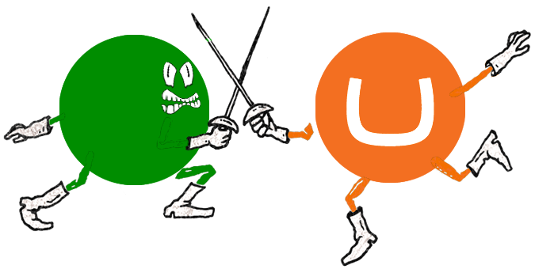

7 Topics
- Data - content, storage and coniguration
- Source-control, versioning and deployment
- Editor experience - multiple users/developers
- Upgrades
- 3 best things about the CMS
- 3 worst things about the CMS
- The future of the CMS
The line up...
- Umbraco - Dan Bramall
- Episerver - Steve Horler
- Drupal - Oliver Davies
- Sitecore - Martina Welander

This is not a battle!
Remember...
" The Friendly CMS "